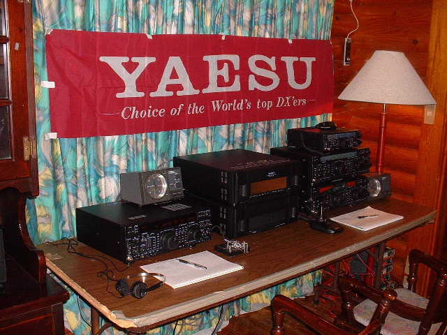
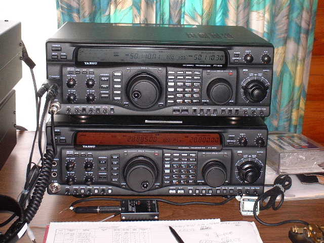
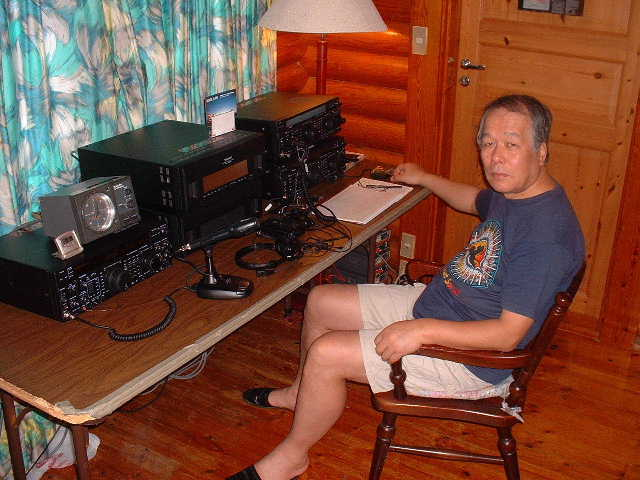
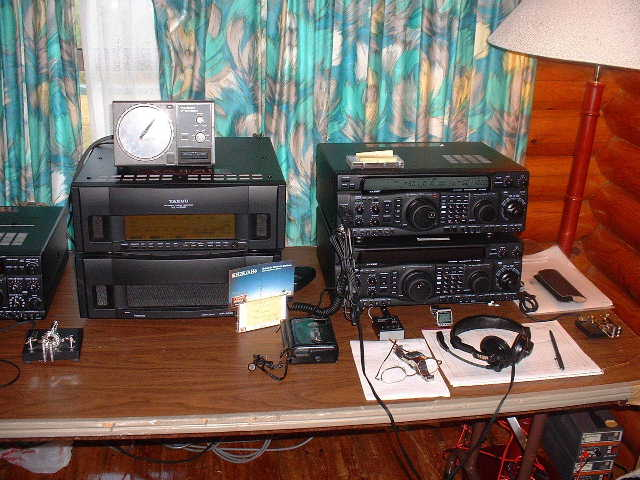
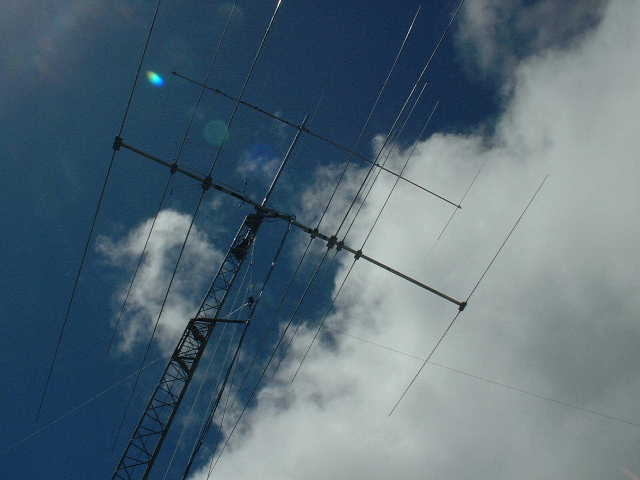
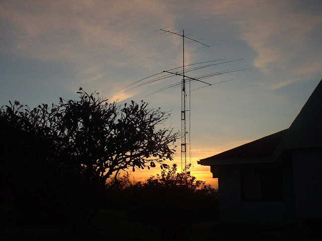

|
【サイパン・マリアナリゾート】
2002年初の海外からの運用は、1月10日から15日の日程で訪問したサイパン・マリアナリゾートホテルのレンタル・シャックでした。
このシャックからの運用は2000年1月以来なので約2年ぶり、7回目の訪問です。サイパンからの運用も1978年のKG6RO運用から8回目となりました。
1997年に八重洲無線(現バーテックススタンダード)の協力でオープンしたレンタル・シャックも今年で5年目を迎えました。
この間、多くのJA局がこのシャックから運用していますが、その後設備もルーフタワーからクランクアップタワーへの交換、
アンテナのグレードアップなど開設当時に比べると利用環境は大きく変わってきました。
その中で、機器(RIG)だけは開設以来一度も交換することなく働き続けてきました。
しかし、最近になって基本動作には影響が無いものの"小さなトラブル"の発生が報告される様になったため、メンテナンス(機器の点検・交換)を兼ね訪問することになりました。
今回の大幅な入れ替えで、レンタル・シャックの設備はFT-1000MP、FT-920×2、FT-847、VL-1000のYAESUの"最強力"ラインナップとなりました。
とくにリニアー・アンプはHF帯専用のFL-7000(500W)から、HF+6m兼用のVL-1000(1KW)に変更され、6mでのハイパワー運用も可能になりました。
交換、新設した機器は次の通り。
交換＝FT-1000MP、FT-920
新設＝VL-1000(1000W・HF & 6mリニアーアンプ)
撤去＝FL-7000(500W・HFリニアーアンプ)
◎詳細はTabix JapanのHomepageを参照。


新装なったRIG一式/"特別仕様"のブルーのディスプレイのFT-920も加わった(上)
【運用】
機器類の交換後の動作点検、確認を兼ねて滞在中に時間の許す限り6mやHF帯の運用を行う事も予定していました。(実はこちらがメイン？)
サイクルのピークを過ぎたとは言え、6mのコンデションはまだ期待が持て、時期(季節)的にローバンドの伝搬も期待出来ることから、
今回のKH2K/AH0は、6mと160mの2つのバンドをメインに運用する事にしました。他のHF帯は同行したJK7TKE・福井さんが受け持つ事になりました。
使用したコールサインはKH2K/AH0(JA1RJU=小笠原）とKH0/JK7TKE(福井)。

HF帯のハイバンドでは"KH0"のプリフィックスもすっかりポピュラーになったとは言え、相変わらずヨーロッパからのパイルアップは何時きても途切れる事がありません。
一方のローバンドでは、まだまだ"珍局"なので、ヨーロッパや北米東部からのリクエストがいまだに多く、今回は160mの北米東部、ヨーロッパとのQSOに重点を置く事にしました。
これまでマリアナリゾートホテルからの運用と言えば、深夜便で到着後、即アンテナの組み立てから機器の設置を行うハードスケジュールが定番でしたが、
今回は午前の便で成田を出発、午後にサイパン着といういたって"健康的"な日程でした。
準備作業もクランクアップ・タワーが設置されてからはアンテナの上げ下ろしの手間がなくなり、利用者の負担が大幅に軽減されたのも嬉しい。
【KH2K/AH0の160m】
夜間の運用の主力となる160mは今回もフルサイズのダイポールでの運用。
ダイポールは10mほどのクランクアップ・タワーの上部に引っ掛け両側に広げた簡単なものでしたが、海抜が高いだけに良く飛んでくれました。
160mは南国特有のパルス性の強力なノイズがあり、コンデションはあまり良いとは言えなかったのですが、11:00z頃には弱い北米東部が入感してきました。
14:00z過ぎに北米のパスが終了して3、4時間後頃には西アジアからヨーロッパがオープンしてくるので、160mの夜間は結構忙しい。
真ともに付き合っていると寝る時間は確実に無くなる厳しいバンドです。
今回は160mのスケジュールに加え、早朝21:00z台から始まる6mも加わり、かなりハードな運用を強いられました。
6mはJAとのコンデションが悪かったため、自由に動き回れるのは昼前後のこの時間帯だけ。夕方には中東・ヨーロッパが入感してくるため、
休養する時間はありません。
◎ 160m(運用周波数=1.8275MHz)
◎ QSO数=162(EU=65. NA=22. OC=12. AS=6. JA=57)
◎ QSO ctry=18
A35. KL7. VK(2.3.6). W(1.4.5.6.7.8.9.0). DU9/4F2. UA(3.4)/RA/RU. UR/UT/UU/UX. 9A. UA(9.0). ZL. YL2. OM. EA6. OH. I4. SM. SP.JA
【1.8MHz帯のJA局は...】
今回は太平洋地区からQSOの困難な北米東部とヨーロッパからのリクエストに応えるため、これらの地域がオープンする時間帯に集中的に運用する事にしました。
北米方面は10:00z (20:00LMT =19:00JST)頃から14:00z (24:00LMT =23:00JST)頃まで、
ヨーロッパ方面が17:00z (03:00LMT =02:00JST)頃から21:00z (07:00LMT =06:00JST)頃までがQSOの可能性のある時間帯でした。
運用周波数はJAの周波数帯1.810-1.825MHzを避け、1.8275MHzを選び運用しました。
このため、JAとのQSOは先出の地域が入感していない時間帯を選んで、主に1.824MHzとスプリットでQSOする事に。
しかし、北米が呼んでいる最中に"オンフレ"で執拗に呼んでくるJA局がいたり(1.9MHz帯の時代にはさすがにコールサインでは呼んでこなかったが...)、
相手をしてくれないからと、最後にはご丁寧に"LID"まで叩いてくるJA局がいたり、何とも後味の悪い160mの運用でした。
DXが聞こえたら直ぐ呼びたくなる気持ちは判りますが、周波数を悦脱してまで呼ぶほどの"珍局"でもないと思うので、
呼ぶときには相手の運用目的も理解して頂き、慌てず次回のチャンスを待ちましょう。
最近はこのレンタル・シャックからも160mに頻繁にQRVしていますのでJAからのQSOのチャンスは多いと思われます。
JAは現地の日暮れから早朝にかけて長時間オープンしているので、"その気"になれば何時でもQSOは可能なのですから。


VL-1000が加わった6mのRIG(FT-920)一式/6mのアンテナもハイパワー仕様となった
【KH2K/AH0の6m】
6mは既にシーズンオフと思われていましたが、予想に反して？JA以外には良く開きました。
特に中東からヨーロッパ東部のコンデションは時間は短いものの頻繁に開きました。
早朝の北米大陸とのオープンは1/11(UTC)の一回だけでしたが、W9、0を中心にW4、W7、W8、KL7がFBに入感。
1/13(UTC)朝には南米・PP1/PY2がオープンQSO出来ました。この時のアンテナ方向は北米方面の40度でした。
WAC完成も期待しましたが、アフリカとのパスは無く残念！。
6mでのQSOエンティティーは17とこの時期としては"まあまあ"の成果でした。
◎ 6m(運用周波数=50.100-130MHz)
◎ QSO数=93(EU=18. NA=22. SA=7. AS=12. OC=3. JA=31)
◎ QSO ctry=17
KH4. JA. HL. VR2. 5B4. JY9. 4X. W(4.7.8.9.0.). KL7. OD5. LZ1/2. US/UT/UX. RU4CE(LO31we)!. 9H. KH2. PP/PY. UN6


|